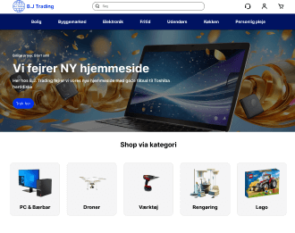
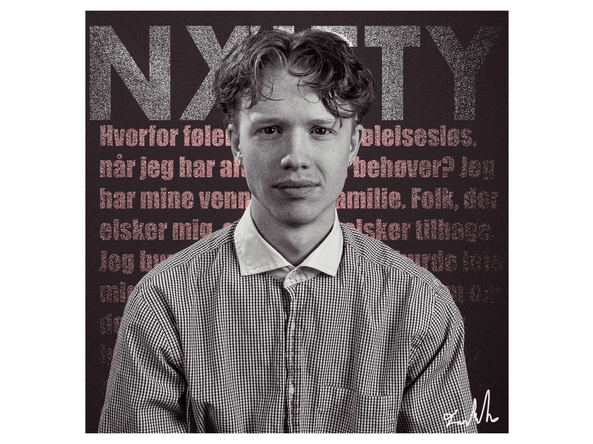
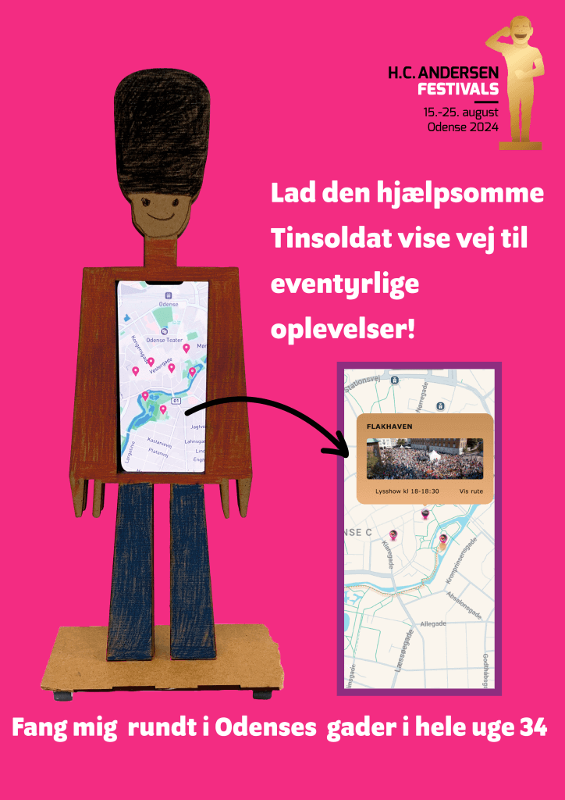
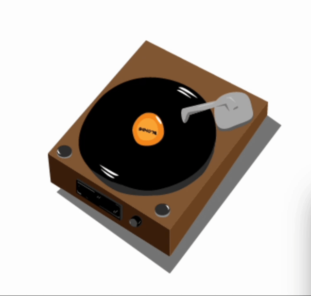

I'm a multimedia designer from Odense, Denmark, dedicated to helping startups shine. I create striking web designs, animations, and interactive experiences tailored to your needs. With a fast-working and precise approach, I turn bold ideas into digital realities that captivate and convert.
Let's build a standout presence for your startup.
Ready to begin?
This project highlights a custom-designed notebook using minimalistic product photography. Edited in Lightroom, it features vibrant colors, soft natural lighting, and a muted background to emphasize the collage-style cover, creating a clean, artistic, and relatable visual presentation.

B.J. Trading
Redesign of Website
Figma
I redesigned BJ-Trading with Figma, crafting a polished prototype that elevates functionality and aesthetics. Every element, from navigation to visuals, was optimized to deliver a seamless, engaging, and user-friendly experience tailored to its audience's needs.
Barkbuddy App
Prototyping App
Figma
With a group of passionate students, and myself BarkBuddy is a prototype app designed to bring dogs and their owners together for fun playdates the design was made from scratch. Created in Figma, it inspires connection, community, and joyful moments for all dog lovers.

Graphic Picture
Graphical Picture
Adobe Photoshop
I have made this striking image, edited it in Photoshop, used bold contrasts to emphasize emotion. The subject pops with sharp focus, while the textured text in the background adds depth, drawing attention to the internal struggles conveyed visually and symbolically.

HCAFestivals
Indesign Poster
Adobe Indesign
I've made this poster, designed in InDesign for the H.C. Andersen Festival project, features a tin soldier as its central element. The design captures the essence of the product we made in our group, blending tradition and creativity to visually represent the magic of Andersen's timeless tales.

Graphic Animation
Vinyl Player
HTML & CSS
In this project i showcase a captivating HTML and CSS animation of a spinning vinyl record player. Through seamless motion and nostalgic design, it beautifully combines creativity and technical expertise, bringing the timeless charm of vinyl to life in a dynamic and engaging digital format.
About
My Work
Programs i use for my work
"Have you ever wondered how great design comes to life?" It starts with the right tools and I've mastered a suite of industry-leading programs to deliver exceptional results in every project. From crafting stunning visuals to building dynamic digital experiences, my work is powered by the perfect blend of creativity and technology.
Adobe Photoshop and Illustrator are my go-to for creating eye-catching graphics, logos, and custom designs, while InDesign helps me lay out sleek, professional documents and presentations. For motion graphics and video editing, After Effects and Premiere Pro allow me to add energy and storytelling to my projects, whether through subtle animations or bold cinematic cuts. When it comes to interactive and web-based solutions, Visual Studio Code is my trusted platform for clean, efficient coding that brings designs to life online.
Each tool plays a unique role in my creative process, enabling me to deliver polished, professional results tailored to my clients' needs.
Whether I'm building a brand identity, designing user interfaces, or creating engaging video content, I leverage these programs to ensure every detail is perfect and every project exceeds expectations.
With a strong command of these tools, I can bring any idea from concept to completion, helping you stand out in today's competitive market. Let's create something extraordinary together.
Abit More About Me
"What if you could combine simplicity with unforgettable design?" I'm Frederik Løvstad, a 23-year-old multimedia designer based in Odense, Denmark, with a passion for crafting visuals that are both minimalistic and extraordinary. As an up-and-coming talent, I specialize in delivering designs that not only look stunning but also communicate effectively, leaving a lasting impression on every audience.
From clean, intuitive web layouts to dynamic animations and compelling graphic content, my work is driven by precision, creativity, and an unshakable dedication to the craft. I believe in stripping away the unnecessary, allowing your message to shine with clarity and purpose. Each project I take on is tailored to meet the unique needs of clients, ensuring that the visuals don't just stand out they elevate your brand to new heights.
Fast-working and detail-oriented, I thrive on turning ambitious ideas into reality.
Whether collaborating with big companies or growing startups, my approach is the same: deliver exceptional results that align with your vision and goals.
If you're looking for a designer who combines minimalism with bold creativity and a sharp eye for detail, let's connect. Together, we can create visuals that don't just captivate. They define your brand.